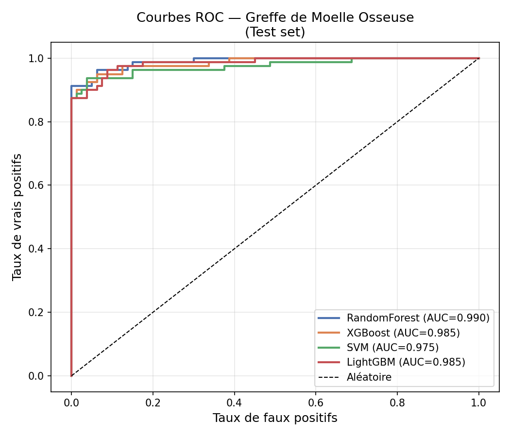
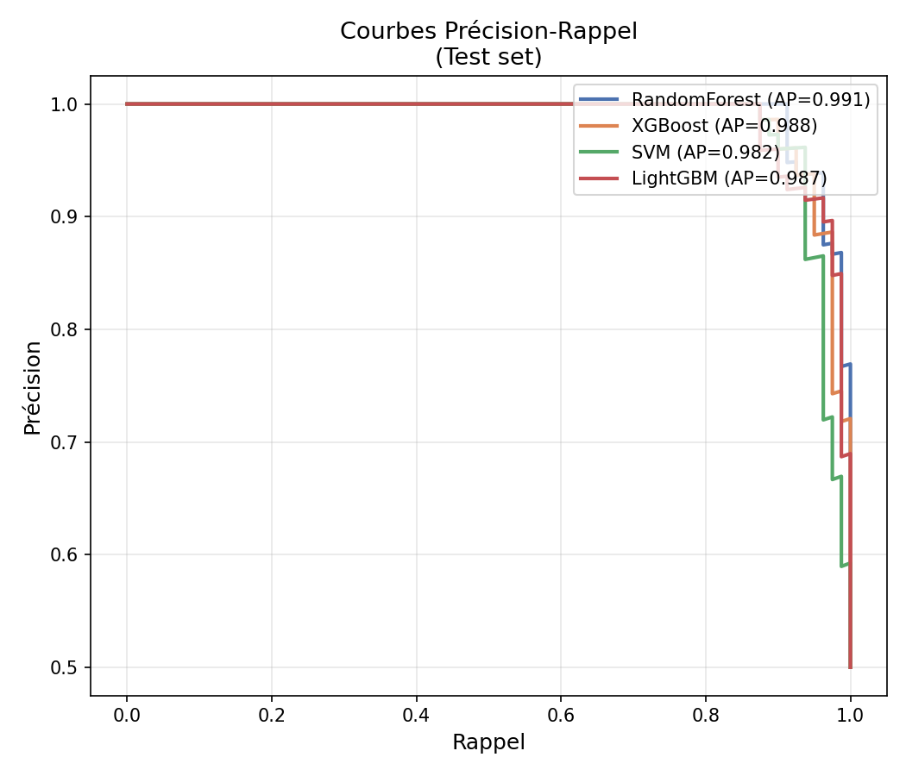
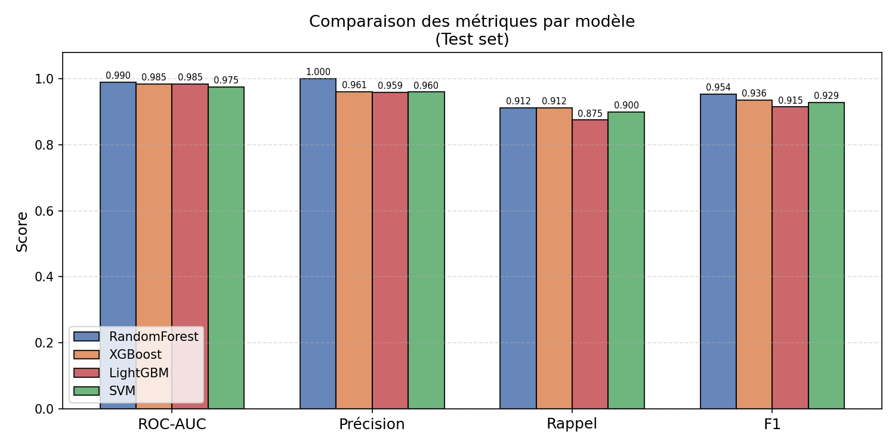
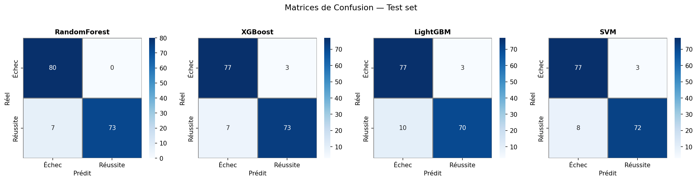
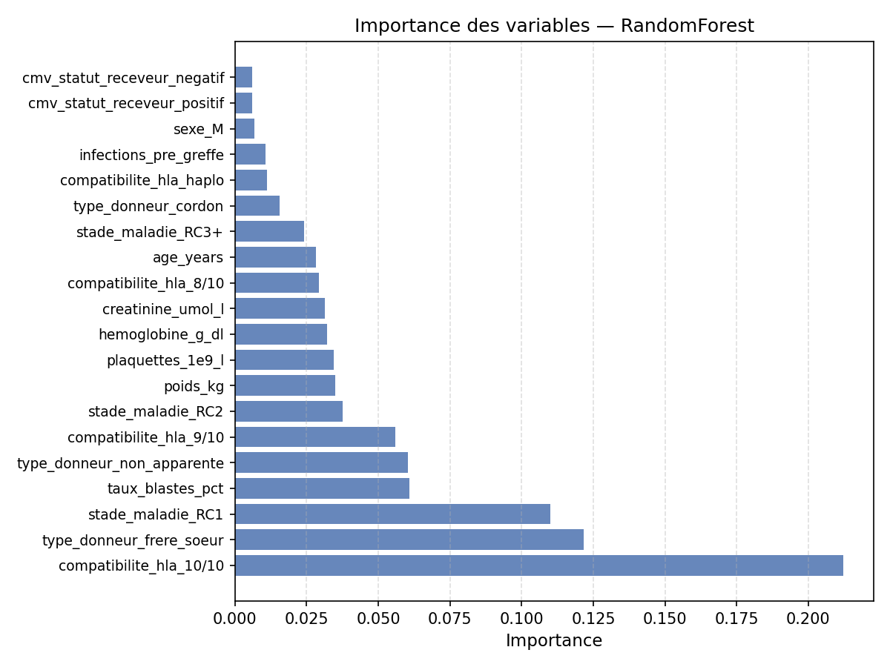

🩺 Prédiction de la Réussite de la Greffe de Moelle Osseuse Pédiatrique
Rapport généré automatiquement • Modèles : RandomForest · XGBoost · SVM · LightGBM
🏆 Meilleur Modèle
RandomForest
📊 Tableau des Métriques (Test set)
| Modèle |
ROC-AUC |
Précision |
Rappel |
F1 |
AP |
| RandomForest |
0.9897 |
1.0000 |
0.9125 |
0.9542 |
0.9910 |
| XGBoost |
0.9850 |
0.9605 |
0.9125 |
0.9359 |
0.9876 |
| LightGBM |
0.9850 |
0.9589 |
0.8750 |
0.9150 |
0.9872 |
| SVM |
0.9750 |
0.9600 |
0.9000 |
0.9290 |
0.9819 |
📈 Visualisations
Courbes ROC

Courbes Précision-Rappel

Comparaison des Métriques

Matrices de Confusion

Importance des Variables (RandomForest)

🔬 Interprétation
- ROC-AUC : capacité discriminante globale (1 = parfait, 0.5 = aléatoire).
- Précision : parmi les patients prédits "réussite", quel % l'est vraiment.
- Rappel : parmi les vrais succès, quel % est correctement détecté.
- F1 : moyenne harmonique Précision/Rappel — équilibre entre les deux.
⚠️ Cet outil est une aide à la décision clinique, non un substitut au jugement médical.